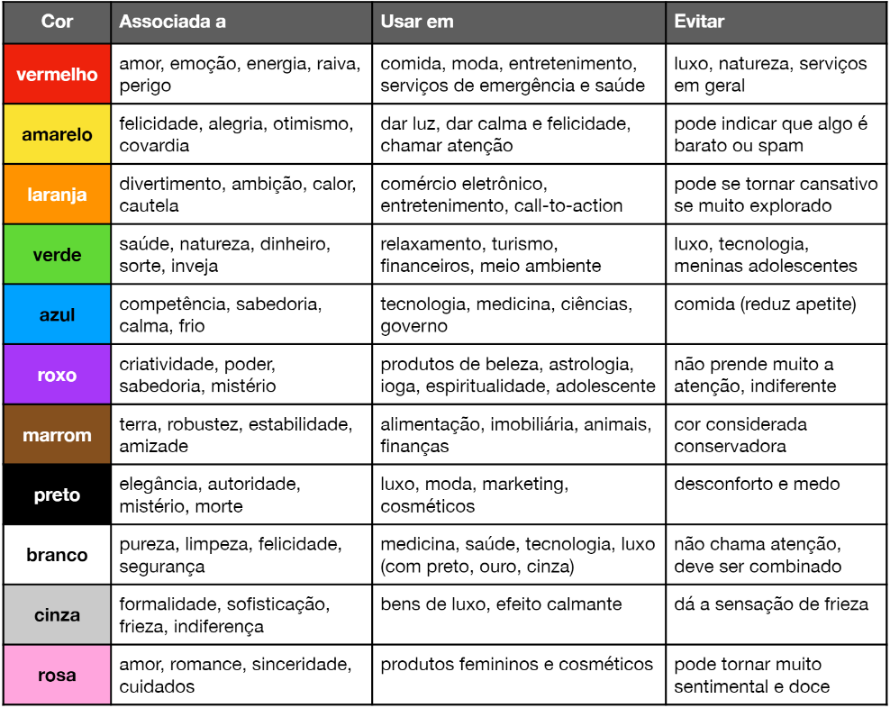
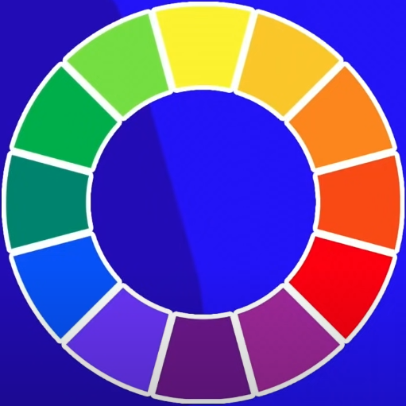
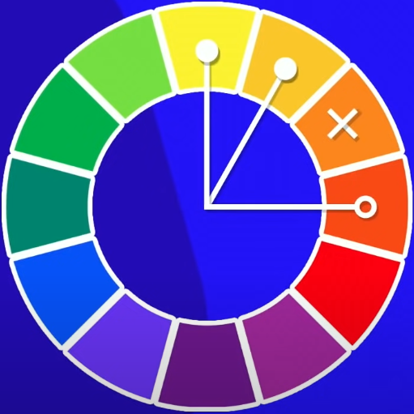
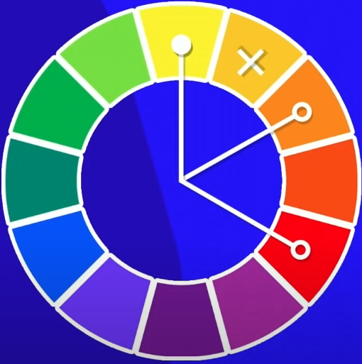
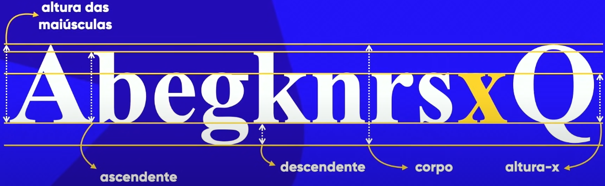

Escrevendo tudo que eu achar importante documentar
Começando por aqui
Será transferido toda marcação que foi feita no caderno para facilitar a mim mesmo
o HTML é uma linguagem focada em conteudo, sendo uma linguagem de marcação e não de programação
o correto não é "eu programo em HTML" e sim "eu DESENVOLVO em HTML"
Front-End Aquele que ajuda na experiencia do cliente,
Back-End Aquele que Interage com o codigo do Front-End,
Full-Stack aquele que faz os dois.
imagens muito grandes são ruins, demora o carregamento do site e o google mostra menos o seu site,
usando o gimp ou photoshop para redimensionar a imagem é uma boa, diminuindo o tamanho da imagem e carregando o site mais rapido,
o tamanho maximo de uma imagem para um site é 1500X1000 uma resolução de 50 ou 72 já esta otimo,
comumente uma imagem em um site é 650x433 a resoluão somente desce para não deixar o tamanho da iamgem muito grande,
tudo depende da sua necessidade para com a imagem.
Usando CTRL + Espaço no Visual Estudio da sugestões.
escrevendo o codiogo sem as setas e apertando enter ou CTRL + Espaço para mostrar sugestões mostra o codigo mais rapido.
Sites para uso de imagens sem direitos autorais algumas podem ter sim direitos autorais
Site Unsplash
Site Pexels
site para pegar icones/icons etc iconarchive
outro site do tipo favicon serve para criar icones/icons
outro
entendendo semantica video 21
simplificadamente é o significado das coisas/palavras/vocabularios sem muita importacia com a forma
usando CTRL + SHIFT + P escrevendo ABB (wrap with abbreviation) da para cobrir uma linha com a tag desejada é só não colocar simbolo menor maior que < >
usando SHIFT e TAB junto faz o codigo ir para trás
alguns comandos usados para HTML
<h1/> <h6/>
<p/>
<img src="foto.png" alt="ex foto">
algumas definições usadas para CSS
h1{ font-family: Arial;
font-size: 20px;
color:Blue; }
a "color" define a propriedade
a "blue" define o valor
Listando Codigos Importantes das Aulas
Aula 1 | Video 12 |
<h1/> a <h6/> H1 Significa Titulo Numero 1/Primeiro Titulo
<p/> paragrafo
<hr> Linha Vertical
Aula 2 | Video 13-14 |
<br> Quebra linha
&-lt-; Less Than ou <
&-gt-; Greather than ou >
<!-- --> Comentar
&-reg-; Marca Registrada, fica assim ®
&-copy-; Simbolo de Copyright, fica assim ©
&-trade-; Simbolo TradeMark, fica assim ™
&-euro-; euro, fica assim €
&-yen-; Yen, fica assim ¥
&-cent-; Centavo, fica assim ¢
R&-dollar-; Tentei fazer o simbolo do real, ficou assim R$
&-dollar-; Dollar, fica assim$
&-pound-; Pound não lembro o que era, fica assim -£
&-uarr-; Seta para cima, fica assim - ↑
&-delta-; Faz o Delta, fica assim - δ
Para Adicionar Emojism
&#x "numeros após o U+"; Exemplo &#x-1F923-; fica assim 🤣
Aula 3 | Video 18 |
<img src="foto.png" alt="ex foto"> src é onde a imagem se encontra o alt é o nome da imagem para facilitar
Aula 4 | Video 19 |
<link rel="shortcut icon" href="favicon.ico" type="image/x-icon">
Aula 5 | Video 20 |
somente h1 entendendo como ele funciona.
Aula 6 | Video 21 |
<address> informa o endereço da pessoa e deixa a letra em italico NÃO USE SÓ PARA DEIXAR A LETRA EM ITALICO.
Aula 7 | Video 22 a 23 |
não semantico, mais para forma
usado para deixar em negrito <b>
usado para deixar em italico <i>
semantico
forma semantica para deixar em negrito <strong>
forma semantica para deixar em italico <em>
texto marcado como um marcador de texto é possivel usar style pra mudar a cor, mas, é melhor fazer isso no css tipo assim
a tag usada é <mark>
textinho pequeno é usado a tag <small> pra deixar ele assim,
texto excluido fica assim, usasse a tag <del>
texto inserido fica assim usa a tag <ins>
Aula 8 | Video 24 |
foi usada a tag <code> que facilita a leitura de um codigo e deixa bonitinho tbm
não precisa ser usado dentro da tag <p>, só não fica corretinho.
foi ensinado o codigo <pre> que ele já deixa PREdefinido deixando o codigo do jeito que você formatar ele no programa de sua escolha
não precisando usar a tag <br> para quebrar linha e coisa do tipo
podendo deixar o codigo da forma que você escolher
:)
usando a tag <q> pode se fazer quotes ou citações <blockquote> serve para escrever o texto 1 por 1 já o <q> serve quando é uma citação que todo mundo usa ou algum conhecido usava bastante, tipo quem não deve não teme
blockquote deixa a citação em preto por algum motivo então eu estou usando style pra ela ficar com o fundo branco, usando cite="" no blockquote vai ajudar os mecanismos de busca a
saber daonde está saindo a citação
blockquote fica assim
e <q> fica assim citação foda
<bdo inverte o texto>
pra fazer mostrar abreviações usa a tag <abbr> (abbreviation) e dentro de tittle é o que a abreviação significa exemplo: "<abbr title="exemplo"> EX <abbr>"
pra fazer texto invertidos usa bdo ai tem dentro de <bdo dir="" (direção)> e tem duas coisas que você pode colocar em dir="" ou dir="ltr" left to right ou dir="rtl" right to LEFT
a tag abbr fica assim EX
a bdo fica assim cu
Aula 8 | Video 25 a 26 |
Fazendo Listas usando a tag <ol> (ordered lists) e a tag <li> (list) dentro da tag <ol>,
deixando dessa forma
<ol>
<li> "coisas pra lista" </li>
</ol>
usando type="" no <ol> lhe da 5 tipos de lista para você escolher, usando start="" e escolhendo um numero você pode informar de quando a lista começa.
usando <ul> e <li> dentro de <ul> é possivel fazer listas não ordenadas conforme o codigo abaixo
<ul>
<li> "coisas pra lista" </li>
</ul>
em ul também é possivel usar type="" sendo eles: disc, circle e square, disc é o padrão
é possivel colocar listas dentro de listas
agora temos listas de definições tipo um dicionario com o termo e a descrição dele fica assim
<dl>
<dt> "termo" <dt>
<dd> "descrição" <dd/>
<dl/>
Aula 9 | Video 27 a 30 |
aprendendo como a tag <a href=""> funciona, usando "target="_blank" rel="external" " dentro da tag <a>
após o href cria um link externo deixando o seu site ainda visivel,
também tem links internos que são outras paginas que você criar e etc da pra fazer um grande repositorio igual esse ou você coloca o nome do seu arquivo hmtl tipo: href="arquivo.html"
ou você coloca a pasta onde ele se localiza tipo: href="../pasta/arquivo"
usa o rel="next" caso seja uma pagina interna caso queira voltar usa o rel="prev"
Aula 10 a 12 | Video 31 a 37 |
Imagens dinamicas
uma imagens dinamicas ajuda muito na visualização do seu site em dispozitivos diferentes, pra facilitar o uso do seu site e melhorar o seu "score" com o google, então, sempre pense nisso
usando a tag <picture> e dentro dela usando as tags <source> e <img> conforme o exemplo a baixo:
<picture>
<source media="(max-width: 750px)" srcset="IMGs/FotoP.png" type="image/png">
<source media="(max-width: 1050px)" srcset="IMGs/FotoM.png" type="image/png">
<img src="IMGs/FotoG.png" alt="imagem flexível">
</picture>
para entender melhor como funciona o codigo explicação a baixo:
<picture> (Começo da tag da tag)
<source (nome da tag) media="(max-width: 750px)"
(tamanho maximo ou pode usar min para tamanho minimo
(sempre adicione 50 a mais nesse tamanho para que a barrinha de rolagem em baixo não mostre))
srcset="IMGs/FotoP.png" (qual imagem vai ser usada) type="image/png"
(tipo de imagem caso seja jpg mude o png para jpg)> (fecha a tag source)
<img src="IMGs/FotoG.png" alt="imagem flexível"> (tag img você tem que saber como funciona né filhão)
</picture> (fim da tag)
Midia/Audio/Musica
tem a forma não dinamica de colocar um audio sendo ela só usando a tag <audio src="">
não é muito util por causa que o navegador do usuario pode não funcionar o formato de audio que você tem
mas pode usar o formato de audio assim:
<audio (tag nome, comandos para a tag ->) preload="metadata"(metadata é a melhor forma preload é carregamento) autoplay (comando para começar o audio sozinho) controls (para a tag audio funcionar) loop (para quando o audio acabar recomeçar sozinho)>
<source (tag nome, comandos para a tag ->) src="local onde o audio se encontra.formato de audio (tem 3 tipos de formatos de audio mp3, ogg e wav que é o mais pesado)" type="tem tres tipos para audio: audio/mpeg para formato mp3, audio/ogg para formato ogg e audio/wav para formato wav.">
<p> usar a tag <p> caso nenhum dos formatos seja suportado no browser do usuario e usar a tag <a> para o cliente poder baixa o audio </p>
Videos
forma dinamica para colocar o video
<video (tag nome controles para a tag->) controls (para o video funcionar) width="400px" (comando css para diminuir o tamanho do video não muda a taxa de tranferencia porra) poster="local da png ou jpg"(serve para colocar thumbnail no video)>
<source (tag nome, comandos da tag ->) src="local do video.formato do video tem varios formatos para videos no exemplo vão ser usados só 3, mp4 mkv e webm" type="tem varios tipos depende do formato que você vai usar sendo eles video/mp4 para mp4, video/webm para webm e video/mkv para video mkv">
<p> usar a tag <p> caso nenhum dos formatos seja suportado no browser do usuario e usar a tag <a> para o cliente poder baixar o video </p>
lembrando videos hospedados localmente vão consumir muito trafico de dados dando um prejuizinho pro cliente
caso você não queira gastar dinheiro pkrl usa a função de compartilhar o video do youtube e pega o codigo lá que o youtube já oferece entendeu
ou usa o vimeo caso você queira privar o seu video mas lembrando ele é pago
coisa boa os dois são adicionados da mesma forma, clica em compartilhar e clica para pegar o codigo simples e pratico
Aula 13 | Video 37
Estilo Inline
inline é para alguma coisa MUITO especifica lembrando se o comando style em alguma tag ela é priorizada acima de qualquer outro style saiba disso
Estilo Local
está forma é boa caso você queira fazer só UMA pagina diferente de todas as outras fora isso NÃO USE DA TRABALHO
Estilo Interno
é possivel adicionar mais um link para css, essa forma de criar um arquivo interno É MUITO MELHOR tu não entende cara,
é possivel usar os 3 em uma só pagina o inline é o mais forte logo vem o local e ai sim vem o externo ou os externos né já que da pra usar mais de um, lembrando o inline tem que ser algo MUITO ESPECIFICO PORRA
curso 1 encerrado
CSS
Finalmente começando o css PUTAQUEOPARIU mas não vai ser bem um css né vamos começar agora por...
Psicologia das Cores
é isso mesmo psicologia das cores BORA LÁ
as empresas de tecnologia escolhem muito o azul, isso porque o azul tem uma ligação a competência, sabedoria, calma e frio todas as cores que ajudam na tecnologia
passando para a proxima temos o uso da cor preta que caso usado como fundo de site e com a letra branca causa cansaço e tira a vontade de ler por isso é melhor usar o tradicional fundo branco e fonte preta caso queira fazer um site com muita leitura
mas caso você queira que os seus clientes leiam pouco mesmo use sim o fundo preto com fonte branca é até bom porque eles já vão direto ao que o site oferece
temos outras cores também tipo o vermelho que geralmente é bastante utilizada em comida o amarelo que tambem é bastante usado pra comida
temos o marrom e o cinza que da aquela ideia mais premium para comida (não tenho certeza se é só pra comida mas varia né)
bem aqui vai uma tabelhinha de como as cores funcionam

mas lembrando as cores não foram feitas pra serem seguidas a fio, brinque e ache o melhor jeito de se usar as cores blz? otimo.
Representando cores com CSS3
tem 4 formas de representar cores com CSS3 sendo elas
por nome tipo Blue, White.
por hexadecimal tipo #0000ff, #ffffff se lé assim o primeiro 00 é red o segundo 00 é green e o ultimo 00 é blue.
por rgb tipo rgb(0,0,255), rgb(255,255,255) bem facinho de entender
por hsl tipo hsl(240,100%,50%), hsl(0, 0%, 100%) esse aqui é mais chatinho de entender
e o ultimo jeito é você escolhendo a cor pelo bloquinho que aparece do lado da cor :) .
Harmonia de cores
Circulo Cromatico

cores primarias
Amarelo
Azul
Vermelho
cores secundarias
Laranja
Violeta
Verde
cores terciarias
Amarelo-esverdeado
Amarelo-Alaranjado
Vermelho-Alaranjado
Vermelho-Arroxeado
Azul-Arroxeado
Azul Esverdeado
Amarelo esverdeado
bem continuando, quando você for fazer um site é necessario fazer uma paleta de cores para que seu site não saia do que foi proposto
uma paleta de cores para um site NORMALMENTE são de 3 a 5 cores com uma media de 4. VOLTANDO
cores complementares ou cores de contraste são bem simpeles de achar é só pegar uma cor no circulo cromatico e pegar o extremo oposto dela (fazendo uma reta até a outra cor)
cores analogas são cores que não tem MUITO contraste entre uma e outra MAS é perceptivel que tem um contraste lá (pra achar cores analogas é só pegar as cores vizinhas no circulo cromatico)
e tambem tem as cores analogas com complementares que é pegando as cores ao lado e o extremo oposto
cores analogas relacionadas conseguir isso é só pegar duas cores uma ao lado da outra pular uma e pegar a quarta cor igual a imagem a baixo

pode ser tambem feito para o outro lado
cores intercaladas é mais explicar com imagem

lembrando esse tipo de paleta fica mais "dura"
cores triadicas você pega uma cor exemplo amarelo pula 3 e vai chegar no vermelho mais 3 e vai chegar no azul formando as cores primarias, mas, é possivel fazer com qualquer outra
tipo laranja roxo e verde
tem as cores em quadrado que enves de 3 você pula só 2
cores tetrádicas faz um X entre as cores pegando 4 cores formando um retangulo
e finalmente a monocromia que trabalha com uma cor só e modifica a saturação e a luminosidade com o hsl. (fica bem bonitinho)
site maneiro da adobe maneiro porque ajuda a entender como funciona isso tudo na pratica.
outro site maneiro mesma coisa só que diferente sabe esse site é muito foda tu não ta ligado meu irmão ELE FAZ UM MINI SITEZINHO COM AS PALHETAS ESCOLHIDAS MEU IRMÃO
outro site maneiro esse aqui é legal caso você não saiba que paleta tu vai usar
Fazendo um testezinho de site
usamos a tag <main> significa que o que estiver dentro dela é o conteudo principal, não tenho certeza se é isso dps eu venho dar uma olhada
Tipografia
escrevendo o que eu achar importante sobre tipografia
tipografia é o estudo de como escrever coisas ou tipografia é o estudo dos tipos
Anatomia dos Tipos

a serifa é aquelas setinhas saindo da letra

indo para parte geometrica
 glifo são letras tipo A e uma fonte é um conjunto de glifos tipo ABCDEFGHIJKLMNOPQRSTUVWXYZ
glifo são letras tipo A e uma fonte é um conjunto de glifos tipo ABCDEFGHIJKLMNOPQRSTUVWXYZ
uma familia tipografica é um letra que vai Mudando mas continua na mesma fonte
diferença entre fonte serifada e não serifada, é que, hoje em dia é recomendado que em texto longos, para impressão em tela, seja usada não serifada, tome cuidado com fontes com o espaço lateral muito curto porquanto que dificulta a leitura
entendendo melhor tamanho de fontes aquele em do CSS
medidas absolutas
cm, mm , in (ou polegada), px, (pt, pc (paica) não é recomendado usar em tela)
medidas relativas
em, ex, rem, vw, vh, % se usa mais o em
para o font-size é mais recomendado o px e o em
modelo de caixa
altura é height
largura é width
border é a borda
padding pode ser acolchoamento ou preenchimento serve para que a borda de uma distancia do conteudo pode ser "aumentado" em qualquer direção
margin é a margem que é o espaço externo para desgrudar os conteudos
outline pode ser o contorno ou traçado tambem é externo
tem caixas de 2 tipos box-level e inline-level
uma caixa do tipo box-level box-level sempre inicia em uma linha nova e ele sempre ocupa a area branca do navegador tipo a imagem a baixo

inline level continua na mesma linha do paragrafo e não quebra a linha tipo a imagem a baixo

tags que são box-level
- div
- h1 a h6
- p
- main
- header
- nav
- article
- aside
- footer
- form
- video
tags que são inline-level
- span
- a
- code
- small
- strong
- em
- sup-sub
- label
- button
- input
- select
background de gif vou usar dps
background-image:url('folder/image.gif'); onde fica a imagem
background-size:100%; o tamanho da imagem pra pegar tudo
background-repeat: repeat-y; para repetir o y quando voce descer desce junto
background-attachment: fixed; para ficar fixado e não ir para outros lados
height:100%; tamanho 100%
width:100%; largura 100%
condensado fica assim
background:url('folder/image.gif') repeat-y 100% 100% fixed;
height:100%;
width:100%;
MODULO 3
GITHUB e GIT
git é um repositorio local e o github é um repositorio remoto
background
A imagem se repetirá automaticamente, em seu tamanho padrão;
Definindo um tamanho para imagem:
background-size: 100px 100px;
Repetição de imagem: (a partir do canto superior direito)
background-repeat:no-repeat;-> sem repetição (apenas 1 imagem)
repeat-x;-> repetição na horizontal
repeat-y-> repetição na vertical
NÃO PODE USAR TABELA PARA CRIAR ESTRUTURA/LAYOUT DE SITE